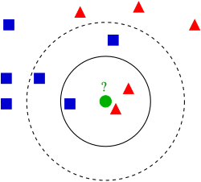

Basic Machine Learning Algorithms
K Nearest Neighbour, Decision Trees, Perceptron

Assignment 1. Where we make 3 basic ML algorithms from scratch to better understand how the things we call AI work.